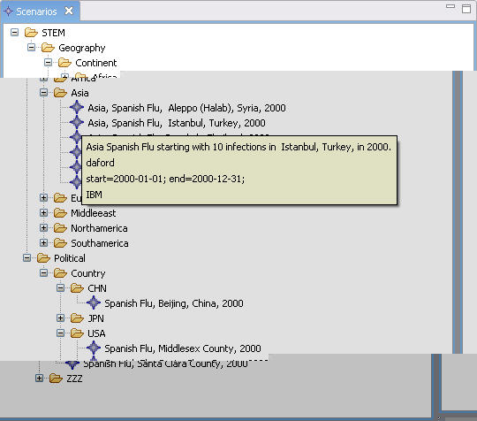
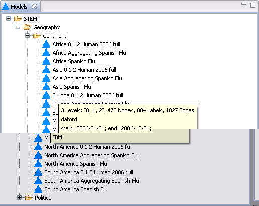

The views that list Simulation components ( Decorators, Graphs, Models, Scenarios and Sequencers) support an instant "pop-up" display of the Dublin Core metadata associated with the components displayed in the view. This takes the form of a small window that is activated when the mouse stops and "hovers" over one of the components. The window presents a short summary of the metadata as illustrated in the images below.
The metadata pop-up in the Scenarios view. The first line is the title of the Scenario, the second line ("daford") is the name of the "creator" of the Scenario. The third line is the date range specified for the Scenario. The last line ("IBM") is the name of the "publisher". 
The metadata pop-up in the Models view
